Test_06_cli_y1587_v7 — Ocean
65 variable(s): 18 FAIL, 16 WARN, 31 PASS, 0 other.
FAIL
Virtual Salt Flux Correction
CF: virtual_salt_flux_correction
It is set to zero in models which receive a real water flux.
| Quantity | Expected | Observed |
|---|---|---|
| min | -1e-4 | — |
| mean | ~0 | — |
| max | 1e-4 | — |
Affected files (1)
- vsfcorr_tavg-u-hxy-sea_mon_glb_gn_AWI-ESM-3_picontrol_r1i1p1f1_158701-158712.nc
Ocean Vertical Heat Diffusivity
CF: ocean_vertical_heat_diffusivity
Vertical/dianeutral diffusivity applied to prognostic temperature field.
| Quantity | Expected | Observed |
|---|---|---|
| min | ~1e-6 | 1.410e-07 |
| mean | ~1e-4 | 0.009681 |
| max | ~1e-2 | 1.855 |
Affected files (1)
- difvho_tavg-ol-hxy-sea_yr_glb_gn_AWI-ESM-3_picontrol_r1i1p1f1_1587-1587.nc
Ocean Vertical Salt Diffusivity
CF: ocean_vertical_salt_diffusivity
Vertical/dianeutral diffusivity applied to prognostic salinity field.
| Quantity | Expected | Observed |
|---|---|---|
| min | ~1e-6 | 1.410e-07 |
| mean | ~1e-4 | 0.009681 |
| max | ~1e-2 | 1.855 |
Affected files (1)
- difvso_tavg-ol-hxy-sea_yr_glb_gn_AWI-ESM-3_picontrol_r1i1p1f1_1587-1587.nc
Northward Ocean Heat Transport
CF: northward_ocean_heat_transport
Contains contributions from all physical processes affecting the northward heat transport, including resolved advection, parameterized advection, lateral diffusion, etc. Diagnosed here as a function of latitude and basin. Use Celsius for temperature scale.
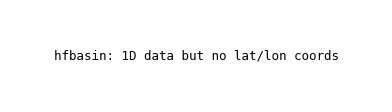
| Quantity | Expected | Observed |
|---|---|---|
| min | -2e15 | -5.067e+16 |
| mean | ~0 | 6.842e+14 |
| max | 2e15 | 5.967e+16 |
Affected files (1)
- hfbasin_tavg-u-hyb-sea_mon_glb_gn_AWI-ESM-3_picontrol_r1i1p1f1_158701-158712.nc
Northward Ocean Salt Transport
CF: northward_ocean_salt_transport
Northward Ocean Salt Transport from all physical processes affecting northward salt transport, resolved and parameterized. Diagnosed here as a function of latitude and basin.

| Quantity | Expected | Observed |
|---|---|---|
| min | -1e9 | -4.567e+10 |
| mean | ~0 | 1.490e+08 |
| max | 1e9 | 3.916e+10 |
Affected files (1)
- sltbasin_tavg-u-hyb-sea_mon_glb_gn_AWI-ESM-3_picontrol_r1i1p1f1_158701-158712.nc
Water Flux into Sea Water
CF: water_flux_into_sea_water
Computed as the water flux into the ocean divided by the area of the ocean portion of the grid cell. This is the sum \*wfonocorr\* and \*wfcorr\*.
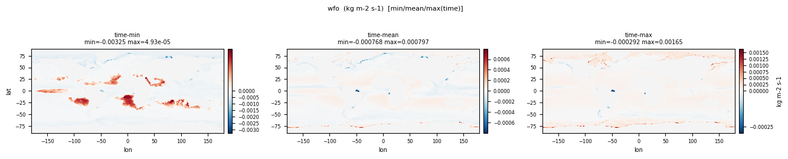
| Quantity | Expected | Observed |
|---|---|---|
| min | -1e-4 (evap) | -0.00475 |
| mean | ~0 | -1.042e-05 |
| max | 1e-4 (precip) | 0.001717 |
Affected files (1)
- wfo_tavg-u-hxy-sea_mon_glb_gn_AWI-ESM-3_picontrol_r1i1p1f1_158701-158712.nc
Sea Water Vertical Velocity
CF: upward_sea_water_velocity
Prognostic z-ward velocity component resolved by the model.
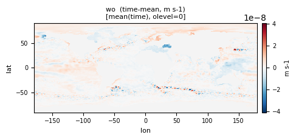
| Quantity | Expected | Observed |
|---|---|---|
| min | -1e-3 | -0.08989 |
| mean | ~0 | -4.199e-07 |
| max | 1e-3 | 0.03205 |
Affected files (1)
- wo_tavg-ol-hxy-sea_mon_glb_gn_AWI-ESM-3_picontrol_r1i1p1f1_158701-158712.nc
Square of Brunt Vaisala Frequency in Sea Water
CF: square_of_brunt_vaisala_frequency_in_sea_water
The phrase "square_of_X" means X\*X. Frequency is the number of oscillations of a wave per unit time. Brunt-Vaisala frequency is also sometimes called "buoyancy frequency" and is a measure of the vertical stratification of the medium.
| Quantity | Expected | Observed |
|---|---|---|
| min | 0 | -3.197e-04 |
| mean | ~1e-5 | 4.969e-05 |
| max | ~1e-3 | 0.04371 |
Affected files (1)
- obvfsq_tavg-ol-hxy-sea_mon_glb_gn_AWI-ESM-3_picontrol_r1i1p1f1_158701-158712.nc
Grid-Cell Area for Ocean Variables
CF: cell_area
Cell areas for any grid used to report ocean variables and variables which are requested as used on the model ocean grid (e.g. hfsso, which is a downward heat flux from the atmosphere interpolated onto the ocean grid). These cell areas should be defined to enable exact calculation of global integrals (e.g., of vertical fluxes of energy at the surface and top of the atmosphere).
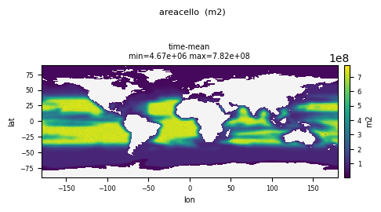
| Quantity | Expected | Observed |
|---|---|---|
| min | ~1e7 | 3.831e+06 |
| mean | ~4e10 | 1.152e+08 |
| max | ~6e10 | 1.076e+09 |
Affected files (1)
- areacello_ti-u-hxy-u_fx_glb_gn_AWI-ESM-3_picontrol_r1i1p1f1.nc
Ocean Momentum XY Laplacian Diffusivity
CF: ocean_momentum_xy_laplacian_diffusivity
Lateral Laplacian viscosity applied to the momentum equations.
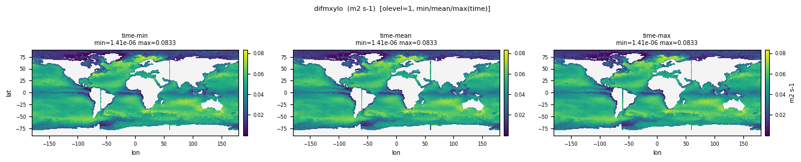
| Quantity | Expected | Observed |
|---|---|---|
| min | 0 | 1.411e-06 |
| mean | ~1000 | 0.01138 |
| max | ~1e4 | 1.637 |
Affected files (1)
- difmxylo_tavg-ol-hxy-sea_yr_glb_gn_AWI-ESM-3_picontrol_r1i1p1f1_1587-1587.nc
Ocean Barotropic Mass Streamfunction
CF: ocean_barotropic_mass_streamfunction
Streamfunction or its approximation for free surface models. See OMDP document for details.
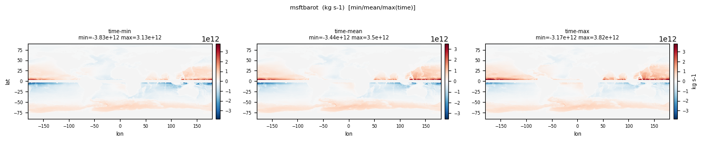
| Quantity | Expected | Observed |
|---|---|---|
| min | -5e11 | -3.852e+12 |
| mean | 0 | 6.484e+10 |
| max | 5e11 | 4.371e+12 |
Affected files (1)
- msftbarot_tavg-u-hxy-sea_mon_glb_gn_AWI-ESM-3_picontrol_r1i1p1f1_158701-158712.nc
Integral with Respect to Depth of Product of Sea Water Density and Potential Temperature
CF: integral_wrt_depth_of_product_of_potential_temperature_and_sea_water_density
Full column sum of density\*cell thickness\*potential temperature. If the model is Boussinesq, then use Boussinesq reference density for the density factor.
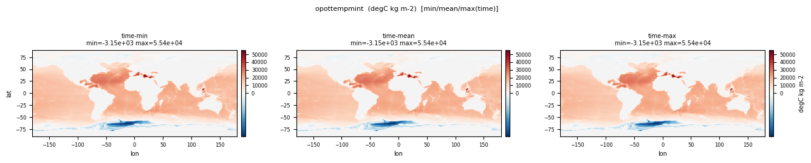
| Quantity | Expected | Observed |
|---|---|---|
| min | -1e7 | -3431.1 |
| mean | ~1e7 | 8010.7 |
| max | 1e8 | 61565.9 |
Affected files (1)
- opottempmint_tavg-u-hxy-sea_yr_glb_gn_AWI-ESM-3_picontrol_r1i1p1f1_1587-1587.nc
Integrated Ocean Heat Content from Potential Temperature
CF: integral_wrt_depth_of_sea_water_potential_temperature_expressed_as_heat_content
This is the vertically-integrated heat content derived from potential temperature (thetao).
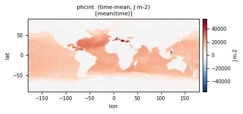
| Quantity | Expected | Observed |
|---|---|---|
| min | 0 | -3514.8 |
| mean | ~1e10 | 8010.7 |
| max | ~5e10 | 61861.5 |
Affected files (1)
- phcint_tavg-op4-hxy-sea_mon_glb_gn_AWI-ESM-3_picontrol_r1i1p1f1_158701-158712.nc
Depth Integral of Product of Sea Water Density and Prognostic Salinity
CF: integral_wrt_depth_of_product_of_salinity_and_sea_water_density
Full column sum of density\*cell thickness\*salinity. If the model is Boussinesq, then use Boussinesq reference density for the density factor.
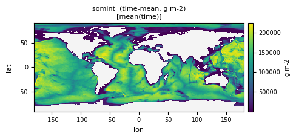
| Quantity | Expected | Observed |
|---|---|---|
| min | 1e5 | 604.6 |
| mean | 1.4e8 | 92995.3 |
| max | 2e8 | 2.260e+05 |
Affected files (1)
- somint_tavg-u-hxy-sea_yr_glb_gn_AWI-ESM-3_picontrol_r1i1p1f1_1587-1587.nc
Ocean Grid-Cell Volume
CF: ocean_volume
For oceans with more than 1 mesh (e.g. staggered grids), report areas that apply to surface vertical fluxes of energy. If this field is time-dependent then save it instead as one of your Omon and Odec fields
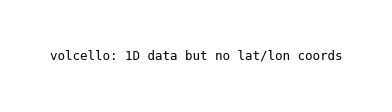
| Quantity | Expected | Observed |
|---|---|---|
| min | 1e6 | 1.916e+07 |
| mean | 1e10 | 2.511e+10 |
| max | 1e12 | 6.652e+12 |
Affected files (3)
- volcello_tavg-ol-hxy-sea_dec_glb_gn_AWI-ESM-3_picontrol_r1i1p1f1_1591-1591.nc
- volcello_tavg-ol-hxy-sea_mon_glb_gn_AWI-ESM-3_picontrol_r1i1p1f1_158701-158712.nc
- volcello_ti-ol-hxy-sea_fx_glb_gn_AWI-ESM-3_picontrol_r1i1p1f1.nc
Downward Heat Flux at Sea Water Surface
CF: surface_downward_heat_flux_in_sea_water
Net flux of heat entering the liquid water column through its upper surface (excluding any 'flux adjustment').
| Quantity | Expected | Observed |
|---|---|---|
| min | -300 | -437.5 |
| mean | ~2 | 14.188 |
| max | 300 | 1906.0 |
Affected files (1)
- hfds_tavg-u-hxy-sea_mon_glb_gn_AWI-ESM-3_picontrol_r1i1p1f1_158701-158712.nc
Tendency of Sea Water Potential Temperature Expressed as Heat Content Due to Parameterized Dianeutral Mixing
CF: tendency_of_sea_water_potential_temperature_expressed_as_heat_content_due_to_parameterized_dianeutral_mixing
Tendency of heat content for a grid cell from parameterized dianeutral mixing. Reported only for models that use potential temperature as prognostic field.
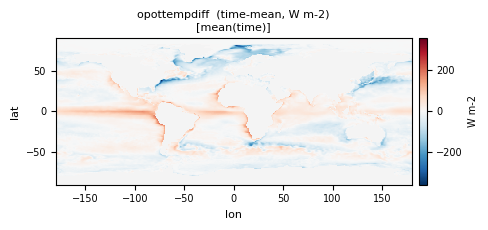
| Quantity | Expected | Observed |
|---|---|---|
| min | -500 | -5314.7 |
| mean | ~0 | -14.524 |
| max | 500 | 1891.3 |
Affected files (1)
- opottempdiff_tavg-ol-hxy-sea_yr_glb_gn_AWI-ESM-3_picontrol_r1i1p1f1_1587-1587.nc
Downward Sea Ice Basal Salt Flux
CF: downward_sea_ice_basal_salt_flux
Basal salt flux into ocean from sea ice. This field is physical, and it arises since sea ice has a nonzero salt content, so it exchanges salt with the liquid ocean upon melting and freezing.
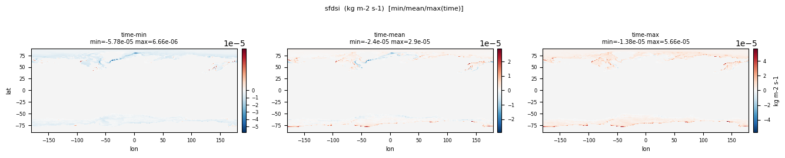
| Quantity | Expected | Observed |
|---|---|---|
| min | -1e-5 | -1.577e-04 |
| mean | ~0 | 5.324e-07 |
| max | 1e-5 | 5.979e-05 |
Affected files (2)
- sfdsi_tavg-u-hxy-sea_mon_glb_gn_AWI-ESM-3_picontrol_r1i1p1f1_158701-158712.nc
- sfdsi_tavg-u-hxy-si_mon_glb_gn_AWI-ESM-3_picontrol_r1i1p1f1_158701-158712.nc
WARN
Integral wrt depth of seawater absolute salinity expressed as salt mass content
CF: integral_wrt_depth_of_sea_water_absolute_salinity_expressed_as_salt_mass_content
This is a fundamental aspect of the changes in the hydrological cycle and their impact on the oceans, and due to new numerical schemes and vertical discretizations, it is important to calculate it consistently with the model formulation.
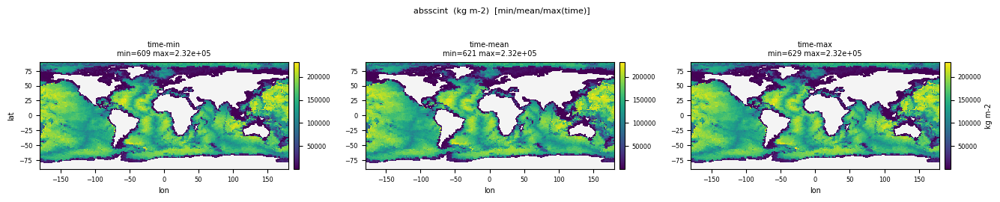
| Quantity | Expected | Observed |
|---|---|---|
| min | 0 | 592.9 |
| mean | ~1.4e5 | 92995.3 |
| max | ~1.6e5 | 2.261e+05 |
Affected files (1)
- absscint_tavg-op4-hxy-sea_mon_glb_gn_AWI-ESM-3_picontrol_r1i1p1f1_158701-158712.nc
Ocean Mixed Layer Thickness Defined by Delta Sigma T of 0.03 kg m-3 referenced to the model level closest to 10 m depth
CF: ocean_mixed_layer_thickness_defined_by_sigma_t
Sigma T is potential density referenced to ocean surface. Defined by Sigma T of 0.03 kg m-3 wrt to model level closest to 10 m depth.
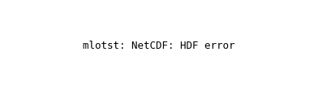
| Quantity | Expected | Observed |
|---|---|---|
| min | ~10 | 7.500 |
| mean | ~60 | 53.066 |
| max | ~2000 | 3165.5 |
Affected files (2)
- mlotst_tavg-u-hxy-sea_day_glb_gn_AWI-ESM-3_picontrol_r1i1p1f1_15870101-15871231.nc
- mlotst_tavg-u-hxy-sea_mon_glb_gn_AWI-ESM-3_picontrol_r1i1p1f1_158701-158712.nc
Square of Ocean Mixed Layer Thickness Defined by Delta Sigma T of 0.03 kg m-3 referenced to the model level closest to 10 m depth
CF: square_of_ocean_mixed_layer_thickness_defined_by_sigma_t
Sigma T is potential density referenced to ocean surface. The phrase "square_of_X" means X\*X. The ocean mixed layer is the upper part of the ocean, regarded as being well-mixed. The base of the mixed layer defined by "temperature", "sigma", "sigma_theta", "sigma_t" or vertical diffusivity is the level at which the quantity indicated differs from its surface value by a certain amount. A coordinate variable or scalar coordinate variable with standard name sea_water_sigma_t_difference can be used to specify the sigma_t criterion that determines the layer thickness. Sigma-t of sea water is the density of water at atmospheric pressure (i.e. the surface) having the same temperature and salinity, minus 1000 kg m-3. "Thickness" means the vertical extent of a layer.
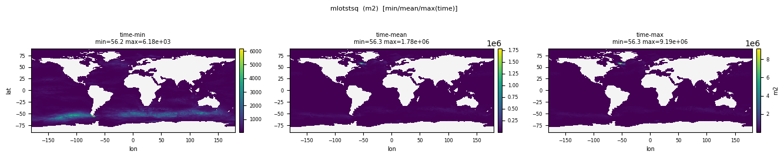
| Quantity | Expected | Observed |
|---|---|---|
| min | 100 | 56.250 |
| mean | ~1e4 | 11635.9 |
| max | ~4e6 | 1.029e+07 |
Affected files (1)
- mlotstsq_tavg-u-hxy-sea_mon_glb_gn_AWI-ESM-3_picontrol_r1i1p1f1_158701-158712.nc
Tendency of Sea Water Potential Temperature Expressed as Heat Content
CF: tendency_of_sea_water_potential_temperature_expressed_as_heat_content
Tendency of heat content for a grid cell from all processes. Reported only for models that use potential temperature as prognostic field.
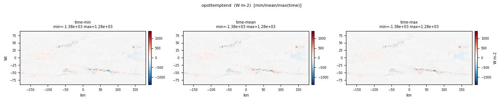
| Quantity | Expected | Observed |
|---|---|---|
| min | -500 | -1383.7 |
| mean | ~0 | -1.464 |
| max | 500 | 1284.5 |
Affected files (1)
- opottemptend_tavg-ol-hxy-sea_yr_glb_gn_AWI-ESM-3_picontrol_r1i1p1f1_1587-1587.nc
Integral wrt depth of seawater practical salinity expressed as salt mass content
CF: integral_wrt_depth_of_sea_water_practical_salinity_expressed_as_salt_mass_content
This is a fundamental aspect of the changes in the hydrological cycle and their impact on the oceans, and due to new numerical schemes and vertical discretizations, it is important to calculate it consistently with the model formulation.
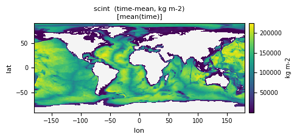
| Quantity | Expected | Observed |
|---|---|---|
| min | 0 | 592.9 |
| mean | ~1.4e5 | 92995.3 |
| max | ~1.5e5 | 2.261e+05 |
Affected files (1)
- scint_tavg-op4-hxy-sea_mon_glb_gn_AWI-ESM-3_picontrol_r1i1p1f1_158701-158712.nc
Sea Water Surface Downward X Stress
CF: downward_x_stress_at_sea_water_surface
The stress on the liquid ocean from interactions with overlying atmosphere, sea ice, ice shelf, etc.
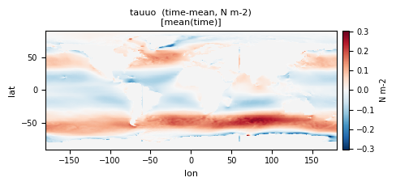
| Quantity | Expected | Observed |
|---|---|---|
| min | -0.5 | -1.022 |
| mean | ~0 | 0.02687 |
| max | 0.5 | 1.337 |
Affected files (2)
- tauuo_tavg-u-hxy-sea_dec_glb_gn_AWI-ESM-3_picontrol_r1i1p1f1_1591-1591.nc
- tauuo_tavg-u-hxy-sea_mon_glb_gn_AWI-ESM-3_picontrol_r1i1p1f1_158701-158712.nc
Sea Water Surface Downward Y Stress
CF: downward_y_stress_at_sea_water_surface
The stress on the liquid ocean from interactions with overlying atmosphere, sea ice, ice shelf, etc.
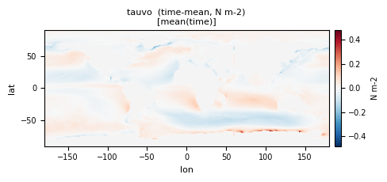
| Quantity | Expected | Observed |
|---|---|---|
| min | -0.5 | -1.090 |
| mean | ~0 | -7.013e-04 |
| max | 0.5 | 0.7038 |
Affected files (2)
- tauvo_tavg-u-hxy-sea_dec_glb_gn_AWI-ESM-3_picontrol_r1i1p1f1_1591-1591.nc
- tauvo_tavg-u-hxy-sea_mon_glb_gn_AWI-ESM-3_picontrol_r1i1p1f1_158701-158712.nc
Sea Water Potential Temperature at Sea Floor
CF: sea_water_potential_temperature_at_sea_floor
Potential temperature at the ocean bottom-most grid cell.
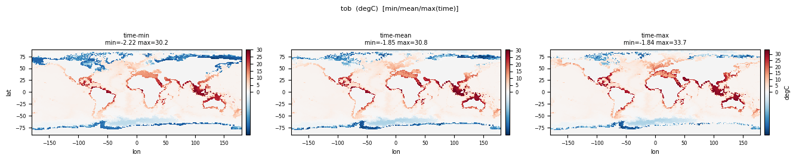
| Quantity | Expected | Observed |
|---|---|---|
| min | -2 | -2.225 |
| mean | 1 | 2.545 |
| max | 10 | 33.668 |
Affected files (1)
- tob_tavg-u-hxy-sea_mon_glb_gn_AWI-ESM-3_picontrol_r1i1p1f1_158701-158712.nc
Sea Water X Velocity
CF: sea_water_x_velocity
Prognostic x-ward velocity component resolved by the model.
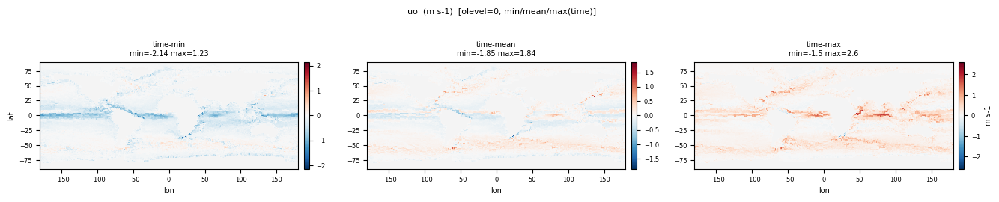
| Quantity | Expected | Observed |
|---|---|---|
| min | -2 | -2.139 |
| mean | ~0 | 0.01153 |
| max | 2 | 2.598 |
Affected files (1)
- uo_tavg-ol-hxy-sea_mon_glb_gn_AWI-ESM-3_picontrol_r1i1p1f1_158701-158712.nc
Daily Surface Sea Water X Velocity
CF: surface_sea_water_x_velocity
Daily surface prognostic x-ward velocity component resolved by the model.
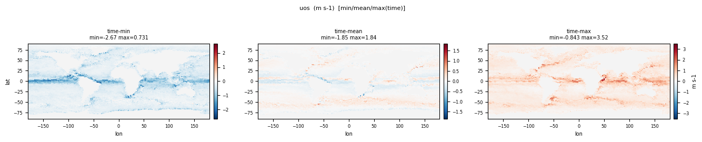
| Quantity | Expected | Observed |
|---|---|---|
| min | -2 | -2.667 |
| mean | ~0 | 0.01576 |
| max | 2.5 | 3.519 |
Affected files (1)
- uos_tavg-u-hxy-sea_day_glb_gn_AWI-ESM-3_picontrol_r1i1p1f1_15870101-15871231.nc
Daily Surface Sea Water Y Velocity
CF: surface_sea_water_y_velocity
Daily surface prognostic y-ward velocity component resolved by the model.
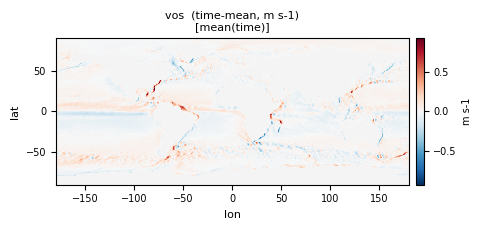
| Quantity | Expected | Observed |
|---|---|---|
| min | -2 | -3.023 |
| mean | ~0 | 0.006417 |
| max | 2.5 | 2.627 |
Affected files (1)
- vos_tavg-u-hxy-sea_day_glb_gn_AWI-ESM-3_picontrol_r1i1p1f1_15870101-15871231.nc
Virtual Salt Flux into Sea Water
CF: virtual_salt_flux_into_sea_water
It is set to zero in models which receive a real water flux.
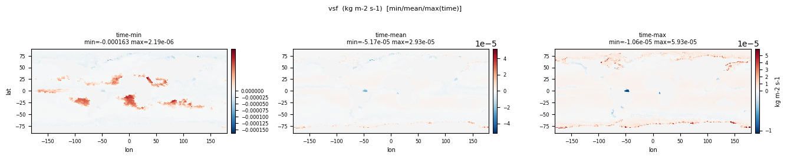
| Quantity | Expected | Observed |
|---|---|---|
| min | -1e-4 | -1.630e-04 |
| mean | ~0 | -3.206e-07 |
| max | 1e-4 | 5.931e-05 |
Affected files (1)
- vsf_tavg-u-hxy-sea_mon_glb_gn_AWI-ESM-3_picontrol_r1i1p1f1_158701-158712.nc
Virtual Salt Flux into Sea Water Due to Sea Ice Thermodynamics
CF: virtual_salt_flux_into_sea_water_due_to_sea_ice_thermodynamics
This variable measures the virtual salt flux into sea water due to the melting of sea ice. It is set to zero in models which receive a real water flux.
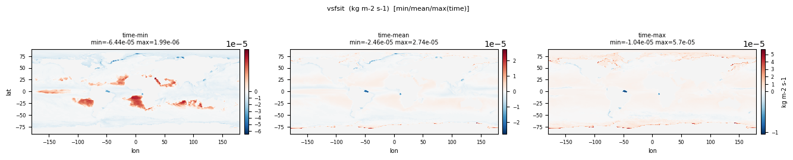
| Quantity | Expected | Observed |
|---|---|---|
| min | -1e-4 | -1.630e-04 |
| mean | ~0 | -3.206e-07 |
| max | 1e-4 | 5.931e-05 |
Affected files (1)
- vsfsit_tavg-u-hxy-sea_mon_glb_gn_AWI-ESM-3_picontrol_r1i1p1f1_158701-158712.nc
Sea Surface Height above Geoid
CF: sea_surface_height_above_geoid
This is the dynamic sea level, so should have zero global area mean. zos is the effective sea level as if sea ice (and snow) at a grid cell were converted to liquid seawater (Campin et al., 2008). For OMIP, do _not _record inverse barometer responses from sea-ice (and snow) loading in zos. See (Griffies et al, 2016, https://doi.org/10.5194/gmd-9-3231-2016).
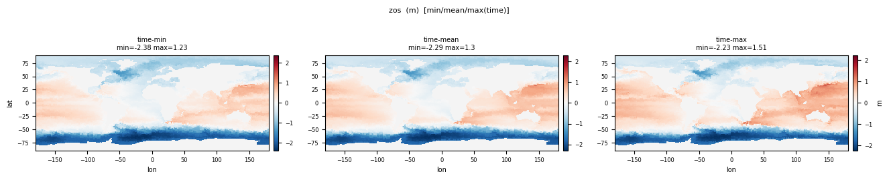
| Quantity | Expected | Observed |
|---|---|---|
| min | -2 | -2.458 |
| mean | 0 | -0.4816 |
| max | 1.5 | 1.627 |
Affected files (2)
- zos_tavg-u-hxy-sea_day_glb_gn_AWI-ESM-3_picontrol_r1i1p1f1_15870101-15871231.nc
- zos_tavg-u-hxy-sea_mon_glb_gn_AWI-ESM-3_picontrol_r1i1p1f1_158701-158712.nc
Square of Sea Surface Height Above Geoid
CF: square_of_sea_surface_height_above_geoid
Surface ocean geoid defines z=0.
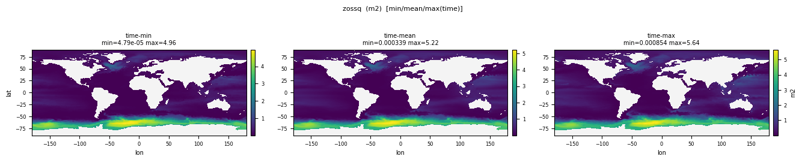
| Quantity | Expected | Observed |
|---|---|---|
| min | 0 | 1.866e-05 |
| mean | 0.1 | 0.8117 |
| max | 4 | 5.668 |
Affected files (1)
- zossq_tavg-u-hxy-sea_mon_glb_gn_AWI-ESM-3_picontrol_r1i1p1f1_158701-158712.nc
global_average_thermosteric_sea_level_change
CF: global_average_thermosteric_sea_level_change
Global Average Thermosteric Sea Level Change

| Quantity | Expected | Observed |
|---|---|---|
| min | -0.01 | -0.001273 |
| mean | 0 | 0.002082 |
| max | 0.01 | 0.005908 |
Affected files (1)
- zostoga_tavg-u-hm-sea_mon_glb_gn_AWI-ESM-3_picontrol_r1i1p1f1_158701-158712.nc
PASS
Region Selection Index
CF: region
A variable with the standard name of region contains strings which indicate geographical regions. These strings must be chosen from the standard region list.
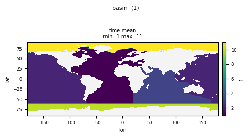
| Quantity | Expected | Observed |
|---|---|---|
| min | 0 | 1.000 |
| mean | - | 4.313 |
| max | ~10 | 11.000 |
Affected files (1)
- basin_ti-u-hxy-u_fx_glb_gn_AWI-ESM-3_picontrol_r1i1p1f1.nc
Sea Floor Depth Below Geoid
CF: sea_floor_depth_below_geoid
Ocean bathymetry. Reported here is the sea floor depth for present day relative to z=0 geoid. Reported as missing for land grid cells.
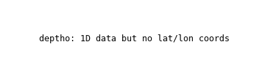
| Quantity | Expected | Observed |
|---|---|---|
| min | 0 | 25.000 |
| mean | ~3700 | 2505.7 |
| max | ~11000 | 6125.0 |
Affected files (1)
- deptho_ti-u-hxy-sea_fx_glb_gn_AWI-ESM-3_picontrol_r1i1p1f1.nc
Water Flux into Sea Water from Rivers
CF: water_flux_into_sea_water_from_rivers
Computed as the river flux of water into the ocean divided by the area of the ocean portion of the grid cell.
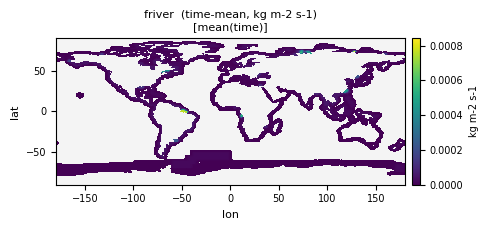
| Quantity | Expected | Observed |
|---|---|---|
| min | 0 | 1.517e-22 |
| mean | ~1e-5 | 1.512e-05 |
| max | ~1e-2 | 0.003657 |
Affected files (1)
- friver_tavg-u-hxy-sea_mon_glb_gn_AWI-ESM-3_picontrol_r1i1p1f1_158701-158712.nc
3D Ocean Heat X Transport
CF: ocean_heat_x_transport
Contains all contributions to 'x-ward' heat transport from resolved and parameterized processes. Use Celsius for temperature scale
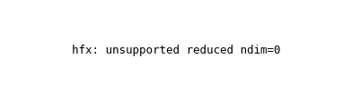
| Quantity | Expected | Observed |
|---|---|---|
| min | -2e15 | -2.964e+13 |
| mean | ~0 | 3.825e+10 |
| max | 2e15 | 4.126e+13 |
Affected files (2)
- hfx_tavg-ol-hxy-sea_mon_glb_gn_AWI-ESM-3_picontrol_r1i1p1f1_158701-158712.nc
- hfx_tavg-u-hxy-sea_mon_glb_gn_AWI-ESM-3_picontrol_r1i1p1f1_158701-158712.nc
3D Ocean Heat Y Transport
CF: ocean_heat_y_transport
Contains all contributions to 'y-ward' heat transport from resolved and parameterized processes. Use Celsius for temperature scale.
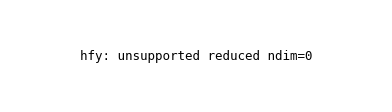
| Quantity | Expected | Observed |
|---|---|---|
| min | -2e15 | -2.785e+13 |
| mean | ~0 | 4.029e+09 |
| max | 2e15 | 2.742e+13 |
Affected files (2)
- hfy_tavg-ol-hxy-sea_mon_glb_gn_AWI-ESM-3_picontrol_r1i1p1f1_158701-158712.nc
- hfy_tavg-u-hxy-sea_mon_glb_gn_AWI-ESM-3_picontrol_r1i1p1f1_158701-158712.nc
Ocean Grid-Cell Mass per Area
CF: sea_water_mass_per_unit_area
For Boussinesq models, report this diagnostic as Boussinesq reference density times grid celll volume.
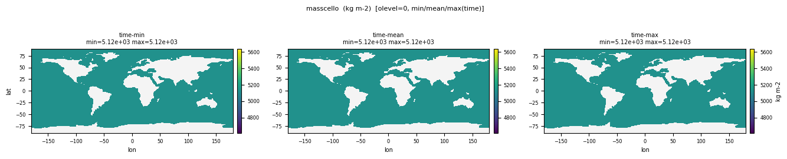
| Quantity | Expected | Observed |
|---|---|---|
| min | ~0 | 5125.0 |
| mean | ~1e5-1e6 | 73955.5 |
| max | ~1e7 | 3.588e+05 |
Affected files (3)
- masscello_tavg-ol-hxy-sea_dec_glb_gn_AWI-ESM-3_picontrol_r1i1p1f1_1591-1591.nc
- masscello_tavg-ol-hxy-sea_mon_glb_gn_AWI-ESM-3_picontrol_r1i1p1f1_158701-158712.nc
- masscello_ti-ol-hxy-sea_fx_glb_gn_AWI-ESM-3_picontrol_r1i1p1f1.nc
Sea Water Mass
CF: sea_water_mass
Total mass of liquid sea water. For Boussinesq models, report this diagnostic as Boussinesq reference density times total volume.
| Quantity | Expected | Observed |
|---|---|---|
| min | 1.3e21 | 1.361e+21 |
| mean | 1.35e21 | 1.361e+21 |
| max | 1.4e21 | 1.361e+21 |
Affected files (2)
- masso_tavg-u-hm-sea_dec_glb_gn_AWI-ESM-3_picontrol_r1i1p1f1_1591-1591.nc
- masso_tavg-u-hm-sea_mon_glb_gn_AWI-ESM-3_picontrol_r1i1p1f1_158701-158712.nc
Ocean Meridional Overturning Mass Streamfunction
CF: ocean_meridional_overturning_mass_streamfunction
Overturning mass streamfunction arising from all advective mass transport processes, resolved and parameterized.

| Quantity | Expected | Observed |
|---|---|---|
| min | -1e11 | -1.044e+11 |
| mean | 0 | 2.769e+09 |
| max | 1e11 | 1.157e+11 |
Affected files (2)
- msftm_tavg-ol-hyb-sea_mon_glb_gn_AWI-ESM-3_picontrol_r1i1p1f1_158701-158712.nc
- msftm_tavg-rho-hyb-sea_mon_glb_gn_AWI-ESM-3_picontrol_r1i1p1f1_158701-158712.nc
Tendency of Sea Water Potential Temperature Expressed as Heat Content Due to Residual Mean Advection
CF: tendency_of_sea_water_potential_temperature_expressed_as_heat_content_due_to_residual_mean_advection
Tendency of heat content for a grid cell from residual mean (sum of Eulerian mean + parameterized eddy-induced) advection. Reported only for models that use potential temperature as prognostic field.
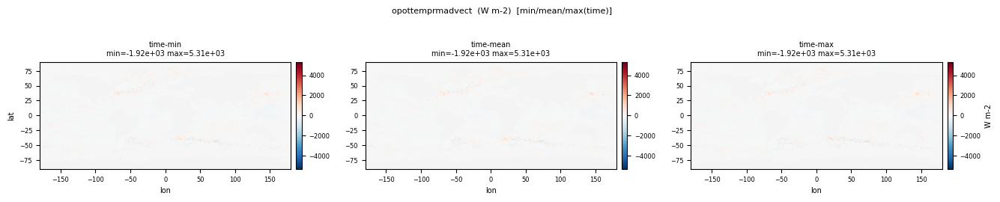
| Quantity | Expected | Observed |
|---|---|---|
| min | -5000 | -1920.2 |
| mean | ~0 | 13.060 |
| max | 5000 | 5312.1 |
Affected files (1)
- opottemprmadvect_tavg-ol-hxy-sea_yr_glb_gn_AWI-ESM-3_picontrol_r1i1p1f1_1587-1587.nc
Tendency of Sea Water Salinity Expressed as Salt Content Due to Parameterized Dianeutral Mixing
CF: tendency_of_sea_water_salinity_expressed_as_salt_content_due_to_parameterized_dianeutral_mixing
Tendency of salt content for a grid cell from parameterized dianeutral mixing.
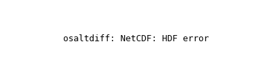
| Quantity | Expected | Observed |
|---|---|---|
| min | -1e-4 | -7.676e-05 |
| mean | ~0 | -3.119e-07 |
| max | 1e-4 | 7.313e-05 |
Affected files (1)
- osaltdiff_tavg-ol-hxy-sea_yr_glb_gn_AWI-ESM-3_picontrol_r1i1p1f1_1587-1587.nc
Tendency of Sea Water Salinity Expressed as Salt Content Due to Residual Mean Advection
CF: tendency_of_sea_water_salinity_expressed_as_salt_content_due_to_residual_mean_advection
Tendency of salt content for a grid cell from residual mean (sum of Eulerian mean + parameterized eddy-induced) advection.
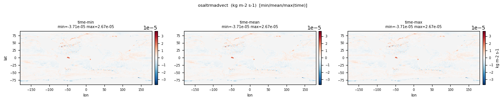
| Quantity | Expected | Observed |
|---|---|---|
| min | -1e-4 | -7.751e-05 |
| mean | ~0 | 3.120e-07 |
| max | 1e-4 | 7.234e-05 |
Affected files (1)
- osaltrmadvect_tavg-ol-hxy-sea_yr_glb_gn_AWI-ESM-3_picontrol_r1i1p1f1_1587-1587.nc
Tendency of Sea Water Salinity Expressed as Salt Content
CF: tendency_of_sea_water_salinity_expressed_as_salt_content
Tendency of salt content for a grid cell from all processes.
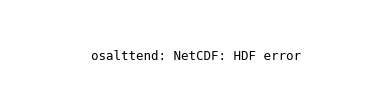
| Quantity | Expected | Observed |
|---|---|---|
| min | -1e-4 | -2.739e-05 |
| mean | ~0 | 1.402e-10 |
| max | 1e-4 | 3.541e-05 |
Affected files (1)
- osalttend_tavg-ol-hxy-sea_yr_glb_gn_AWI-ESM-3_picontrol_r1i1p1f1_1587-1587.nc
Sea Water Pressure at Sea Floor
CF: sea_water_pressure_at_sea_floor
"Sea water pressure" is the pressure that exists in the medium of sea water. It includes the pressure due to overlying sea water, sea ice, air and any other medium that may be present.
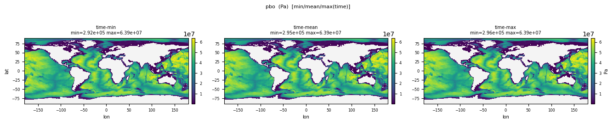
| Quantity | Expected | Observed |
|---|---|---|
| min | 0 | 2.827e+05 |
| mean | ~4e7 | 2.635e+07 |
| max | ~1.1e8 | 6.387e+07 |
Affected files (1)
- pbo_tavg-u-hxy-sea_mon_glb_gn_AWI-ESM-3_picontrol_r1i1p1f1_158701-158712.nc
Sea Water Pressure at Sea Water Surface
CF: sea_water_pressure_at_sea_water_surface
The phrase "sea water surface" means the upper boundary of the liquid portion of an ocean or sea, including the boundary to floating ice if present. "Sea water pressure" is the pressure that exists in the medium of sea water. It includes the pressure due to overlying sea water, sea ice, air and any other medium that may be present.
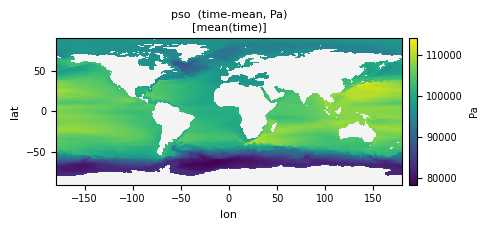
| Quantity | Expected | Observed |
|---|---|---|
| min | ~0 | 77395.8 |
| mean | ~101325 | 96484.1 |
| max | ~102000 | 1.165e+05 |
Affected files (1)
- pso_tavg-u-hxy-sea_mon_glb_gn_AWI-ESM-3_picontrol_r1i1p1f1_158701-158712.nc
Net Rate of Absorption of Shortwave Energy in Ocean Layer
CF: net_rate_of_absorption_of_shortwave_energy_in_ocean_layer
Tendency of heat content for a grid cell from penetrative shortwave radiation within a grid cell.
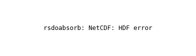
| Quantity | Expected | Observed |
|---|---|---|
| min | 0 | 1.644e-14 |
| mean | varies by layer | 3.949 |
| max | ~300 | 66.422 |
Affected files (1)
- rsdoabsorb_tavg-ol-hxy-sea_yr_glb_gn_AWI-ESM-3_picontrol_r1i1p1f1_1587-1587.nc
Sea Area Percentage
CF: sea_area_fraction
This is the area fraction at the ocean surface.
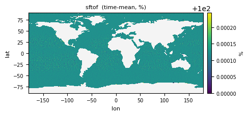
| Quantity | Expected | Observed |
|---|---|---|
| min | 0 | 100.0 |
| mean | ~71 | 100.0 |
| max | 100 | 100.0 |
Affected files (1)
- sftof_ti-u-hxy-u_fx_glb_gn_AWI-ESM-3_picontrol_r1i1p1f1.nc
3D Ocean Salt Mass X Transport
CF: ocean_salt_x_transport
Contains all contributions to 'x-ward' salt mass transport from resolved and parameterized processes. Report on native horizontal grid.
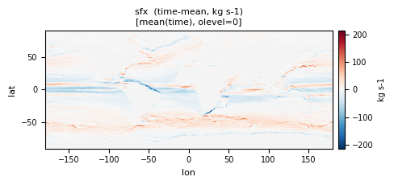
| Quantity | Expected | Observed |
|---|---|---|
| min | -1e8 | -6619.3 |
| mean | ~0 | 14.291 |
| max | 1e8 | 5706.4 |
Affected files (2)
- sfx_tavg-ol-hxy-sea_mon_glb_gn_AWI-ESM-3_picontrol_r1i1p1f1_158701-158712.nc
- sfx_tavg-u-hxy-sea_mon_glb_gn_AWI-ESM-3_picontrol_r1i1p1f1_158701-158712.nc
3D Ocean Salt Mass Y Transport
CF: ocean_salt_y_transport
Contains all contributions to 'y-ward' salt mass transport from resolved and parameterized processes. Report on native horizontal grid.
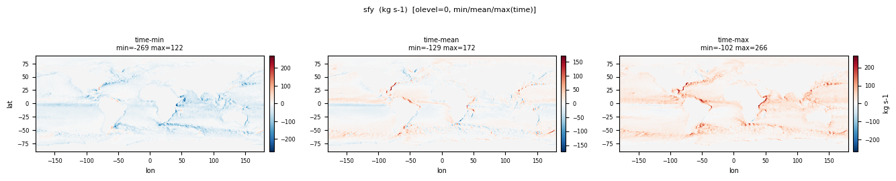
| Quantity | Expected | Observed |
|---|---|---|
| min | -1e8 | -3936.7 |
| mean | ~0 | -0.1234 |
| max | 1e8 | 5478.1 |
Affected files (2)
- sfy_tavg-ol-hxy-sea_mon_glb_gn_AWI-ESM-3_picontrol_r1i1p1f1_158701-158712.nc
- sfy_tavg-u-hxy-sea_mon_glb_gn_AWI-ESM-3_picontrol_r1i1p1f1_158701-158712.nc
Global Mean Sea Water Salinity
CF: sea_water_salinity
Sea water salinity is the salt content of sea water, often on the Practical Salinity Scale of 1978. However, the unqualified term 'salinity' is generic and does not necessarily imply any particular method of calculation. The units of salinity are dimensionless and the units attribute should normally be given as 1e-3 or 0.001 i.e. parts per thousand.
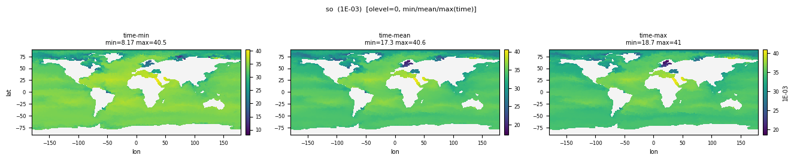
| Quantity | Expected | Observed |
|---|---|---|
| min | 0 | 8.167 |
| mean | 34.7 | 34.513 |
| max | 42 | 42.011 |
Affected files (3)
- so_tavg-ol-hm-sea_mon_glb_gn_AWI-ESM-3_picontrol_r1i1p1f1_158701-158712.nc
- so_tavg-ol-hxy-sea_dec_glb_gn_AWI-ESM-3_picontrol_r1i1p1f1_1591-1591.nc
- so_tavg-ol-hxy-sea_mon_glb_gn_AWI-ESM-3_picontrol_r1i1p1f1_158701-158712.nc
Sea Water Salinity at Sea Floor
CF: sea_water_salinity_at_sea_floor
Model prognostic salinity at bottom-most model grid cell
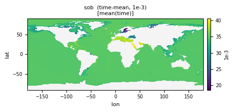
| Quantity | Expected | Observed |
|---|---|---|
| min | 5 | 13.002 |
| mean | 34.7 | 34.470 |
| max | 42 | 40.876 |
Affected files (1)
- sob_tavg-u-hxy-sea_mon_glb_gn_AWI-ESM-3_picontrol_r1i1p1f1_158701-158712.nc
Global Average Sea Surface Salinity
CF: sea_surface_salinity
Sea water salinity is the salt content of sea water, often on the Practical Salinity Scale of 1978. However, the unqualified term 'salinity' is generic and does not necessarily imply any particular method of calculation. The units of salinity are dimensionless and the units attribute should normally be given as 1e-3 or 0.001 i.e. parts per thousand.
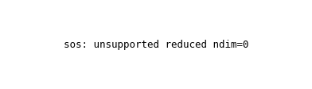
| Quantity | Expected | Observed |
|---|---|---|
| min | 0 | 5.840 |
| mean | 34.7 | 33.421 |
| max | 42 | 43.073 |
Affected files (3)
- sos_tavg-u-hm-sea_mon_glb_gn_AWI-ESM-3_picontrol_r1i1p1f1_158701-158712.nc
- sos_tavg-u-hxy-sea_day_glb_gn_AWI-ESM-3_picontrol_r1i1p1f1_15870101-15871231.nc
- sos_tavg-u-hxy-sea_mon_glb_gn_AWI-ESM-3_picontrol_r1i1p1f1_158701-158712.nc
Square of Sea Surface Salinity
CF: square_of_sea_surface_salinity
Sea water salinity is the salt content of sea water, often on the Practical Salinity Scale of 1978. However, the unqualified term 'salinity' is generic and does not necessarily imply any particular method of calculation. The units of salinity are dimensionless and the units attribute should normally be given as 1e-3 or 0.001 i.e. parts per thousand.
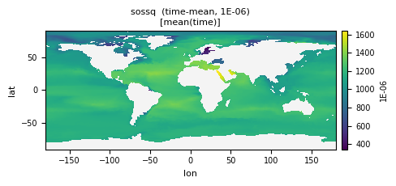
| Quantity | Expected | Observed |
|---|---|---|
| min | 0 | 68.665 |
| mean | 1205 | 1122.9 |
| max | 1764 | 1678.3 |
Affected files (1)
- sossq_tavg-u-hxy-sea_mon_glb_gn_AWI-ESM-3_picontrol_r1i1p1f1_158701-158712.nc
Depth Average Potential Temperature of Upper 2000m
CF: sea_water_potential_temperature
Upper 2000m, 2D field
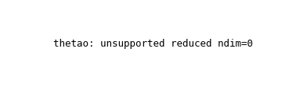
| Quantity | Expected | Observed |
|---|---|---|
| min | -2 | -2.255 |
| mean | 3.5 | 5.854 |
| max | 32 | 33.840 |
Affected files (3)
- thetao_tavg-ol-hm-sea_mon_glb_gn_AWI-ESM-3_picontrol_r1i1p1f1_158701-158712.nc
- thetao_tavg-ol-hxy-sea_dec_glb_gn_AWI-ESM-3_picontrol_r1i1p1f1_1591-1591.nc
- thetao_tavg-ol-hxy-sea_mon_glb_gn_AWI-ESM-3_picontrol_r1i1p1f1_158701-158712.nc
Ocean Model Cell Thickness
CF: cell_thickness
The time varying thickness of ocean cells. "Thickness" means the vertical extent of a layer. "Cell" refers to a model grid-cell.
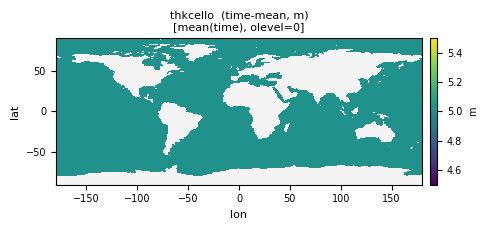
| Quantity | Expected | Observed |
|---|---|---|
| min | 1 | 5.000 |
| mean | 50 | 72.152 |
| max | 500 | 350.0 |
Affected files (3)
- thkcello_tavg-ol-hxy-sea_dec_glb_gn_AWI-ESM-3_picontrol_r1i1p1f1_1591-1591.nc
- thkcello_tavg-ol-hxy-sea_mon_glb_gn_AWI-ESM-3_picontrol_r1i1p1f1_158701-158712.nc
- thkcello_ti-ol-hxy-sea_fx_glb_gn_AWI-ESM-3_picontrol_r1i1p1f1.nc
Global Average Sea Surface Temperature
CF: sea_surface_temperature
This may differ from "surface temperature" in regions of sea ice or floating ice shelves. For models using conservative temperature as the prognostic field, they should report the top ocean layer as surface potential temperature, which is the same as surface in situ temperature.
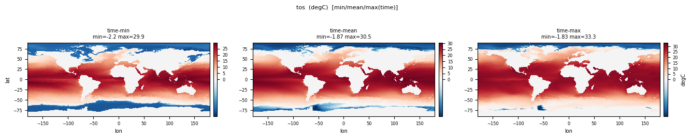
| Quantity | Expected | Observed |
|---|---|---|
| min | -2 | -2.333 |
| mean | 18 | 9.328 |
| max | 32 | 34.666 |
Affected files (3)
- tos_tavg-u-hm-sea_mon_glb_gn_AWI-ESM-3_picontrol_r1i1p1f1_158701-158712.nc
- tos_tavg-u-hxy-sea_day_glb_gn_AWI-ESM-3_picontrol_r1i1p1f1_15870101-15871231.nc
- tos_tavg-u-hxy-sea_mon_glb_gn_AWI-ESM-3_picontrol_r1i1p1f1_158701-158712.nc
Square of Sea Surface Temperature
CF: square_of_sea_surface_temperature
Square of temperature of liquid ocean, averaged over the day.
| Quantity | Expected | Observed |
|---|---|---|
| min | 0 | 7.050e-16 |
| mean | ~350 | 197.1 |
| max | 1024 | 1201.7 |
Affected files (2)
- tossq_tavg-u-hxy-sea_day_glb_gn_AWI-ESM-3_picontrol_r1i1p1f1_15870101-15871231.nc
- tossq_tavg-u-hxy-sea_mon_glb_gn_AWI-ESM-3_picontrol_r1i1p1f1_158701-158712.nc
Ocean Mass X Transport
CF: ocean_mass_x_transport
X-ward mass transport from residual mean (resolved plus parameterized) advective transport.
| Quantity | Expected | Observed |
|---|---|---|
| min | -1e12 | -1.905e+05 |
| mean | 0 | 413.7 |
| max | 1e12 | 1.643e+05 |
Affected files (1)
- umo_tavg-ol-hxy-sea_mon_glb_gn_AWI-ESM-3_picontrol_r1i1p1f1_158701-158712.nc
Ocean Mass Y Transport
CF: ocean_mass_y_transport
Y-ward mass transport from residual mean (resolved plus parameterized) advective transport.
| Quantity | Expected | Observed |
|---|---|---|
| min | -1e12 | -1.131e+05 |
| mean | 0 | -3.726 |
| max | 1e12 | 1.577e+05 |
Affected files (1)
- vmo_tavg-ol-hxy-sea_mon_glb_gn_AWI-ESM-3_picontrol_r1i1p1f1_158701-158712.nc
Sea Water Y Velocity
CF: sea_water_y_velocity
Prognostic y-ward velocity component resolved by the model.
| Quantity | Expected | Observed |
|---|---|---|
| min | -2 | -2.019 |
| mean | ~0 | 0.001323 |
| max | 2 | 2.065 |
Affected files (1)
- vo_tavg-ol-hxy-sea_mon_glb_gn_AWI-ESM-3_picontrol_r1i1p1f1_158701-158712.nc
Sea Water Volume
CF: sea_water_volume
Total volume of liquid sea water.
| Quantity | Expected | Observed |
|---|---|---|
| min | 1.33e18 | 1.328e+18 |
| mean | 1.335e18 | 1.328e+18 |
| max | 1.34e18 | 1.328e+18 |
Affected files (2)
- volo_tavg-u-hm-sea_dec_glb_gn_AWI-ESM-3_picontrol_r1i1p1f1_1591-1591.nc
- volo_tavg-u-hm-sea_mon_glb_gn_AWI-ESM-3_picontrol_r1i1p1f1_158701-158712.nc
Upward Ocean Mass Transport
CF: upward_ocean_mass_transport
Upward mass transport from residual mean (resolved plus parameterized) advective transport.
| Quantity | Expected | Observed |
|---|---|---|
| min | -1e10 | -13578.8 |
| mean | ~0 | -0.04648 |
| max | 1e10 | 11085.9 |
Affected files (1)
- wmo_tavg-ol-hxy-sea_mon_glb_gn_AWI-ESM-3_picontrol_r1i1p1f1_158701-158712.nc